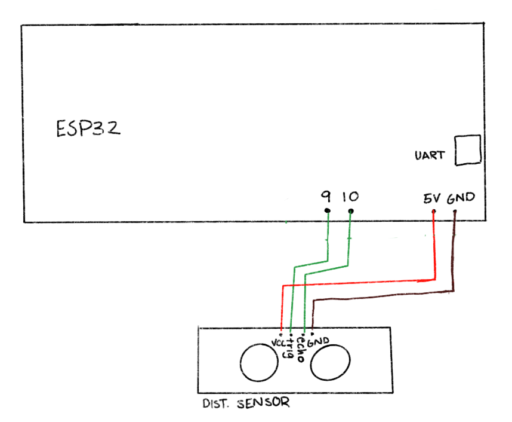

### Inputs
## Concept & Inspirations
For my microcontroller week, I used a distance sensor to control a kinetic sculpture representation of Daphne from the myth of Daphne and Apollo.
## Design Process
<pre><code>
long duration, distance;
digitalWrite(trigPin, LOW);
delayMicroseconds(2);
digitalWrite(trigPin, HIGH);
delayMicroseconds(60);
digitalWrite(trigPin, LOW);
duration = pulseIn(echoPin, HIGH);
distance = (duration / 2) / 29.1;
</code></pre>
<pre><code>
if (distance < distanceThreshold) {
digitalWrite(A1A, LOW);
digitalWrite(A1B, HIGH);
} else {
digitalWrite(A1A, HIGH);
digitalWrite(A1B, LOW);
}
</code></pre>
Circuit wiring:

##Final Result & Notes
The trunk "opens" when one moves away from the distance sensor:
<video width="320" height="240" controls>
<source src="distancetree.mp4" type="video/mp4">
Your browser does not support the video tag.
</video>
<video width="320" height="240" controls>
<source src="distancetree2.mp4" type="video/mp4">
Your browser does not support the video tag.
</video>
The main issue I would/will resolve is the friction between the motor attachment and the base; it makes it a little too difficult to get the trunk to "close," and it would be easily fixed if I adjusted my dimensions very slightly and reprinted. Otherwise, I'm very happy with the final result.